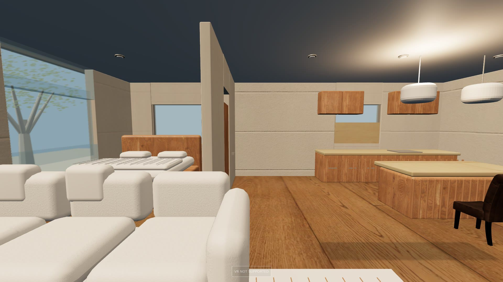

Renders produced headlessly with Unreal Engine 5.8.3 (Movie Render Queue, Python scripting) on a cloud Linux GPU workstation. Six Unreal projects, each shown with a clean still and a short clip where one exists.
Projects

NOVA VR Villa Original VR villa project in Unreal Engine 5: a modern villa interior. Still: living room.
NOVA Villa V4 — architectural quality pass UE 5.8 look-development scene focused on architectural realism: materials, daylight and the pool terrace. Clip: camera move along the pool.
NOVA Villa V5 — living room QA scene UE 5.8 interior QA scene: living room with glazing, foliage and furniture lighting checks, opening onto the pool.
NOVAWorld — Bayil first-person prototype Early UE5 first-person prototype of the Bayil district, Baku: a city blockout, ready for detailed art passes.
Interiors — alchemist library & medieval tavern Two stylised interior scenes assembled and lit in UE 5.8, rendered with Movie Render Queue. Clip: library push-in. Tavern clip · tavern still.
NOVAVilla — Blender to Unreal villa Separate villa project modelled in Blender and brought into Unreal: two floors, pool, landscaping. Work-in-progress prototype, not yet tested in the editor or in VR. Clip: aerial view.
Pipeline tests
Cesium for Unreal — test render Test render: Cesium for Unreal plugin streaming 3D tiles into UE 5.8, rendered headlessly via Movie Render Queue. 1280×720.
Movie Render Queue orbit — test render Test render: scripted camera orbit of a basic test scene, used to verify the headless UE 5.8 render pipeline. 1280×720.